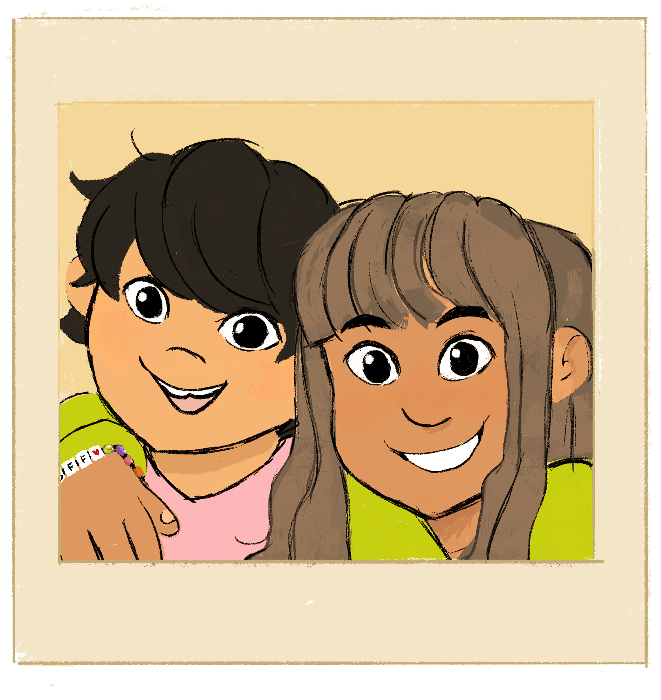

I surveyed my room, trying to decide what to tackle first:
The month’s worth of dirty laundry on the floor,
my poor desk hiding under a scatter of books, pens,
and plates of half-eaten food and coffee mugs,
or the twisted pile of blankets, pillows and
God knows what staring at me?
I thought, as I walked towards my unmade bed. I began pushing the twisted pile towards the edge until I heard the ruffle of paper and something heavy hit the floor.
I looked down and saw a photo album, opened to a picture of me and her: Sam.
Carefully, I pulled the photo from the plastic sleeve to inspect it further. Although time had caused the edges to worn and colours to fade slightly, our toothy smiles and crinkled eyes were as clear as the day it was taken. Our last day together. I know because her arm, intertwined with mine, wore the bracelet I gave her as a farewell present. I promised we’d be friends forever no matter how far away she moved. That’s what you believe when you’re 12 and when your biggest problem in life was waiting for certain body parts to come in.
But then life gets more complicated. At first we emailed each other everyday, but then days became weeks, and then months, and then just on birthdays or Christmases. How long has it been since our last email? Five, maybe?
So much for my promise, I thought as I gently ran the tips of my fingers across the photo. I noticed they left a soft grey smudge. I turned over the photo and saw a note written in charcoal.
What's written on the back of the photo? *Answer: ANSWER*
Nope, try again!
I guess she broke her promise too. Feelings of sadness, regret, and disappointment suddenly washed over me. I started to wonder what she was like now. Was she the same person I remembered? Did she think of me too?
Social media would answer my questions. I walked over to my computer, completely forgetting the mess I had to clean. As I began to type her name in the search bar, I realized I didn’t know Sam’s handle or even her last name.
Hm... Finding her would be harder than I thought. I tapped my fingers on my desk, trying to think of where to begin.
Our emails!
What is Sam's old elementary school called? *Answer: MARTIN GROVE*
Nope, try again!

I sighed...
and stared at the screen. What if this was a mistake and she didn’t want to hear from me? Or worse, what if she didn’t remember me or our promise? What if Sam had an amazing life with amazing friends, and I was just interrupting it? But what if I didn’t do this? What if she missed me too? What if, what if, what if.
Before overthinking and social anxiety got the best of me, I decided losing a friend was worse than rejection.
After repeatedly typing and deleting, and typing and deleting, I sent the email and almost immediately, I heard the familiar notification sound of new mail. It was an automated message: “This mailbox is no longer in service.” Well, crap. Despite my disappointment, I wasn’t surprised. Sam probably thought happibunni43@gmail.com wasn’t appropriate for a twenty-something working professional anymore and changed it.
I’d have to reach her another way. I scanned through our old emails, looking for clues. Sam mentioned her high school in one of them. Maybe I could contact a student or teacher she knew. I checked Facebook, but found probably hundreds of people linked to her school. Where do I even begin? They couldn’t have all known Sam. I needed to find a photo, a status update--something indicating they knew her.
And once I did, I’d be a step closer to finding my friend.
Who do you message on Facebook? *Temporary answer: JESSICA BRATFORD*